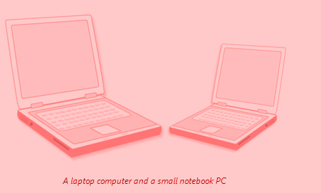
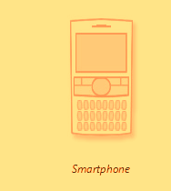
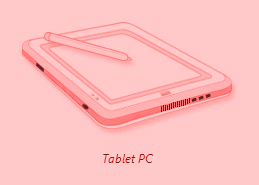
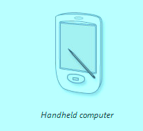

Computers range in size and capability. At one end of the scale are supercomputers, very large computers with thousands of linked microprocessors that perform extremely complex calculations. At the other end are tiny computers embedded in cars, TVs, stereo systems, calculators, and appliances. These computers are built to perform a limited number of tasks. The personal computer, or PC, is designed to be used by one person at a time. This section describes the various kinds of personal computers: desktops, laptops, handheld computers, and Tablet PCs.
Desktop computers are designed for use at a desk or table. They are typically larger and more powerful than other types of personal computers. Desktop computers are made up of separate components. The main component, called the system unit, is usually a rectangular case that sits on or underneath a desk. Other components, such as the monitor, mouse, and keyboard, connect to the system unit.
Desktop computers are designed for use at a desk or table. They are typically larger and more powerful than other types of personal computers. Desktop computers are made up of separate components. The main component, called the system unit, is usually a rectangular case that sits on or underneath a desk. Other components, such as the monitor, mouse, and keyboard, connect to the system unit.
Laptop computers are lightweight mobile PCs with a thin screen. Laptops can operate on batteries, so you can take them anywhere. Unlike desktops, laptops combine the CPU, screen, and keyboard in a single case. The screen folds down onto the keyboard when not in use. Small notebook PCs (often referred to asmini-notebooks), are small, affordable laptops that are designed to perform a limited number of tasks. They're usually less powerful than a laptop, so they're used mainly to browse the web and check e‑mail.

Smartphones are mobile phones that have some of the same capabilites as a computer. You can use a smartphone to make telephone calls, access the Internet, organize contact information, send e‑mail and text messages, play games, and take pictures. Smartphones usually have a keyboard and a large screen.

Tablet PCs are mobile PCs that combine features of laptops and handheld computers. Like laptops, they're powerful and have a built-in screen. Like handheld computers, they allow you to write notes or draw pictures on the screen, usually with a tablet pen instead of a stylus. They can also convert your handwriting into typed text. Some Tablet PCs are “convertibles” with a screen that swivels and unfolds to reveal a keyboard underneath.

Handheld computers, also called personal digital assistants (PDAs), are battery-powered computers small enough to carry almost anywhere. Although not as powerful as desktops or laptops, handheld computers are useful for scheduling appointments, storing addresses and phone numbers, and playing games. Some have more advanced capabilities, such as making telephone calls or accessing the Internet. Instead of keyboards, handheld computers have touch screens that you use with your finger or a stylus (a pen-shaped pointing tool).
